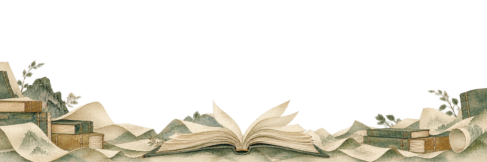
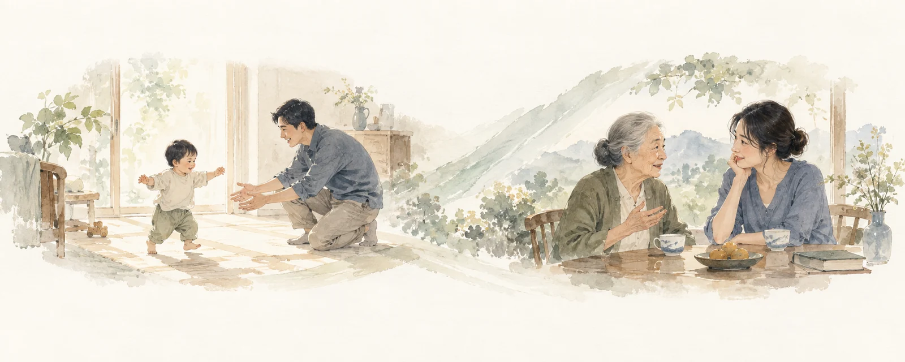
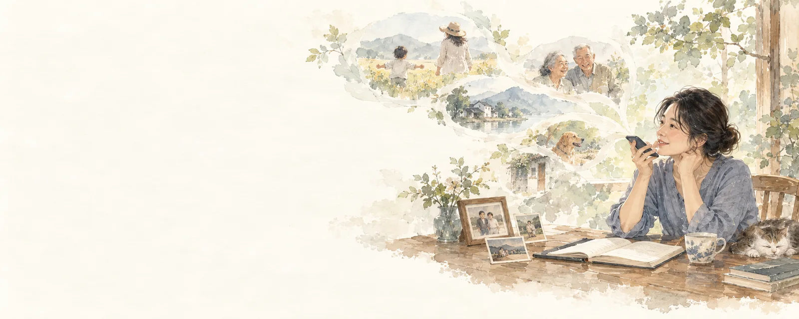
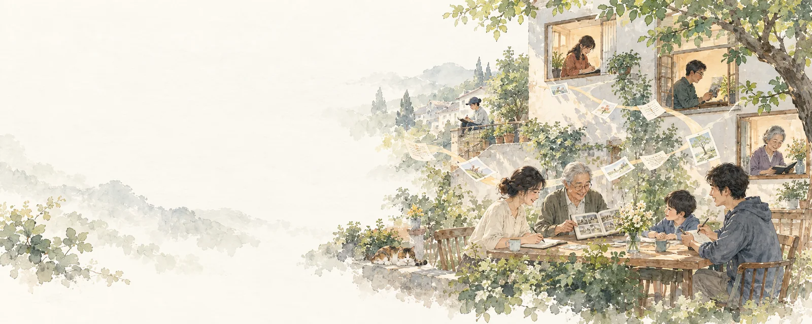
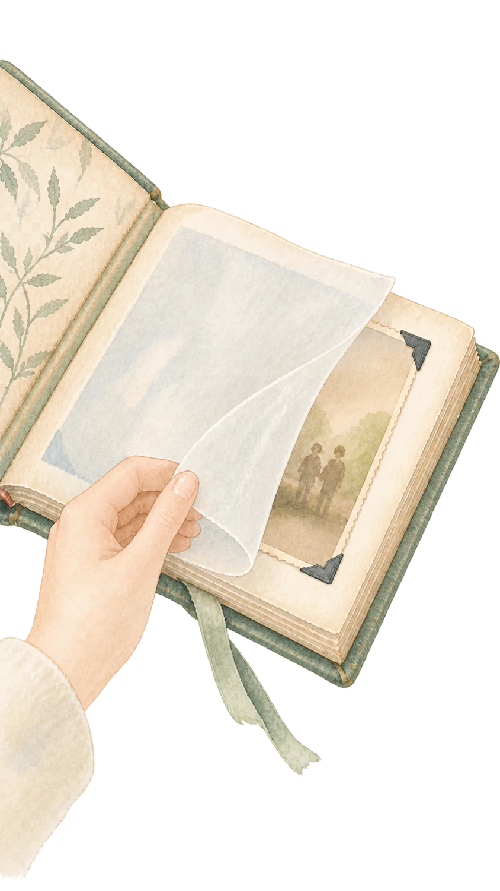
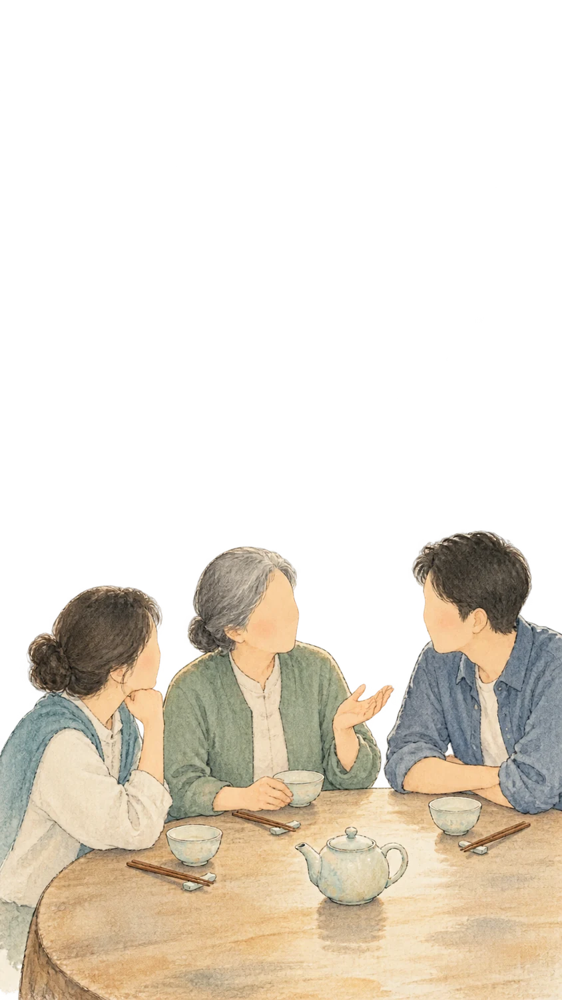
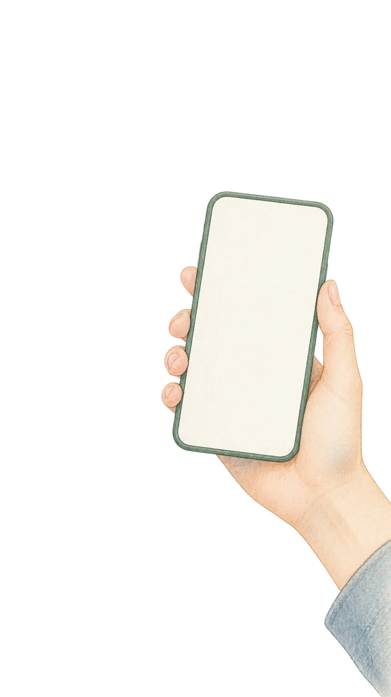
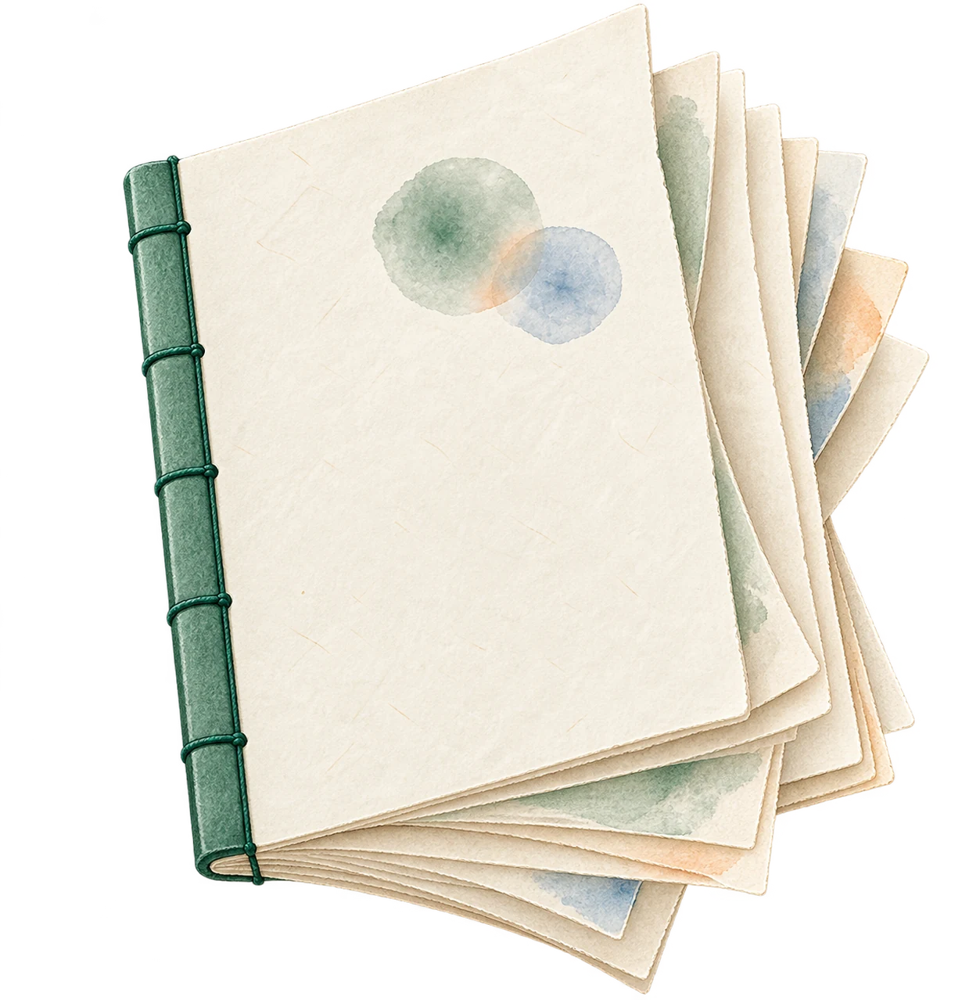
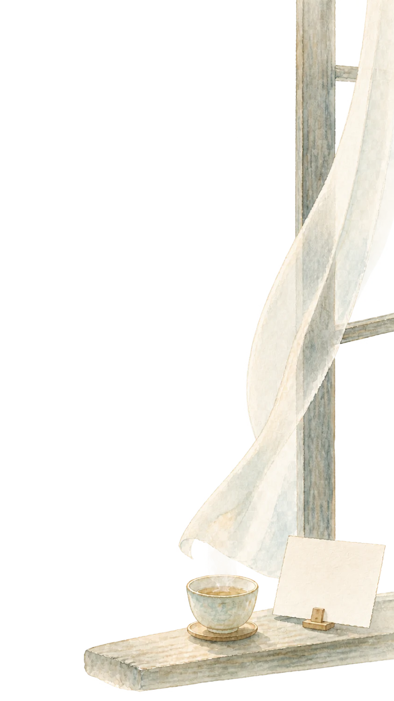
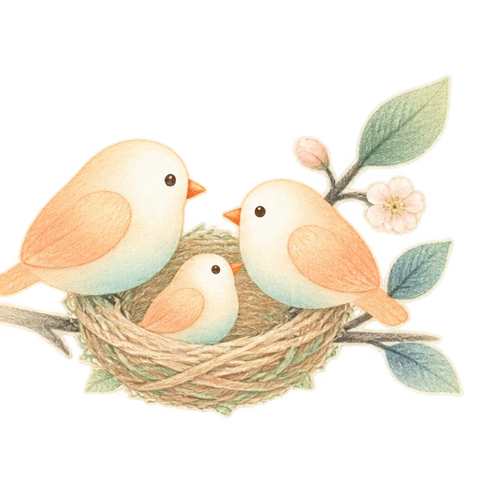

从真实的感受出发，
让故事连接彼此。
感受是人最本能的体验。拾光借助 AI，让文学、艺术与影像中积累的表达方式走进日常，把难以说清的心情讲给重要的人。

Ai时代创作的主体，创作的方式都变了。但新的市场，正在形成。

每个人，都有记录自己的起点
每次生产力的爆发，艺术都会以更普惠的形式服务人。以前，人们买票进影院看别人的故事；现在，普通人可以自己享受创造的过程。

从制作技能，到表达意图
自然语言、个人素材和上下文，成为调用生成能力的入口。创作成本下降，有机会带来新的艺术形式与参与者。

新需求，尚待成为新市场
我们判断 AIGC 的长期空间可能远超传统影视。新的付费习惯、产品品类与商业模式，仍需要被建立。
我们不在工具赛道，
也不在内容赛道。
投资人通常会把拾光归入 AIGC 生成工具或家庭记忆应用——这两个都不准确。拾光更接近一个新品类：AI 赋能的个人传记服务。
通用 AI 生成工具
Runway · 可灵 · 即梦 · Pika
这些工具给专业创作者和有创作能力的人用。用户要自己想提示词，自己懂构图，自己做判断。拾光的用户不需要懂任何这些——他们只需要有话想说。
家庭相册 / 回忆类应用
时光相册 · Google Photos · StoryWorth
这类产品以「存」为核心：存照片、存时间线。拾光以「表达」为核心：把一段感受，长成一个能被另一个人接住的故事。存档和表达，是不同的人类需求。
传记写作服务
人工代写 · 出版社自传服务
传统传记写作贵、慢、门槛高，服务的是名人和有钱有闲的人。拾光想做的是：让一个普通人在一个下午，就能把一段重要的经历，变成值得留下来的东西。
Remento（最接近的参照）
口述回忆录 · 已有付费产品
Remento 每周用一个问题引导家人口述往事，再由 AI 整理成文章，印成扫码可听原声的精装书。它销售 99 美元的一年记录服务；参考视频称，投资后不到一年销售额超过 700 万美元。
这一案例说明，家庭故事的记录与保存已有付费市场。Remento 以定期问答和纸质书为中心；拾光从当下情绪出发，让人们在微信小程序随时记录，再通过同一账号在电脑端写成可编辑、可分享的 AI 人生传记。
Remento 服务与价格见其官网（https://www.remento.co/）；700 万美元为参考视频转述，尚待独立核验。
技术不断变化。
人的感情，始终让我们相通。
无论技术如何变化、人类文明如何演变，爱、牵挂、思念、失落与希望，依然让不同时代、不同经历的人彼此理解。
表达的方式可以改变，每个人的故事也各不相同。拾光选择从真实感受出发，借助最先进的AI算法，让这些经历获得记录，并传递给重要的人。
这背后是一个更根本的判断：谁有权解释自己的人生，谁有权把它表达出来、留下来、递给另一个人。我们希望把这个权利，还给普通人。
不是帮用户赚钱，不是消耗用户的时间，也不是满足某种创作者的自我表达——人类所有的精神文明，是给人力量、给人抚慰的。拾光也是。

传记，不再是名人的专利。
每个人的人生，都值得被记录。
文字、影像与 AI，正在让普通人有能力记录自己的完整人生。拾光希望帮助每个人，把自己的经历与感受，写成属于自己的传记。
生成能力持续进步，也让一个问题变得重要：怎样把一个人的真实经历与感受，准确地交给模型？
盈利路径仍在探索。
记录自己的需要，长期存在。
技术与表达形式会不断变化。人们依然需要记录自己的经历、理解生活，并把故事留给重要的人。这是拾光的长期判断。
拾光已经采用充值收费，持续、可规模化的盈利模式仍在探索。我们选择从家庭切入，用实际使用、付费与成本数据，逐步验证它能否成为可持续的业务。
我们选择离人近一点。
从家庭开始。
共同生活的时间，
留下共同记忆，
也积累深厚的感情。
我们相信，家庭拥有更深的情感浓度。感谢、牵挂、思念都有具体的对象，一段文字或一幅画面，就可能成为传记的起点。
拾光家忆已针对老年人和小朋友专门重做了前端界面——家庭切入不只是方向判断，也体现在每一个产品取舍里。
用户写下的文字越多，图片的重新生成率越低，用户也越能专注在自己的故事里，而不是反复抽卡。我们引导用户用文字讲清楚，是因为文字越多，传记就越贴近本人。

人类的感情是相通的。
文明的积累，属于每一个普通人。
这不是一句口号，而是拾光做每一个产品决策的出发点。
创始人：美术 × 计算机的双重视角
创始人本科读漫画，在影视制作行业工作七年后，凭工作收入赴美国学习计算机。前期主要做实拍美剧、韩剧，后期转向动画电影；期间与腾讯、网易等游戏公司有外包合作。参与过的作品包括《长津湖》《巨怪猎人》《长安三万里》《八仙！》。
长期的制作工作让创始人同时训练艺术判断与技术执行：理解台词、画面和参数在剧情中的作用，以及观众会有什么感受。拾光要把这种判断带进产品；创始人会先亲自搭建各阶段，遇到问题再找到合适的人共同解决。
现有团队：计算机 + 社会学 / 文学 / 编剧
团队成员一半懂怎么让系统跑起来，另一半懂人类为什么会被某一个故事打动。社会学、文学、编剧的训练，不是装饰——它是我们判断「这个传记是否真的贴近这个人」的依据。
人类的文明积累，不应该只属于专业人
几千年的叙事形式、美术语言和情感表达，不需要用户读完才能用上。我们相信 AI 可以做这个中间层：把人类积累的表达形式，借给一个此刻想记录自己人生的普通人——不要求专业训练，不要求时间投入，只需要真实的感受。
AI 可以满足人类的创作欲望
人有创作欲，这件事比 AI 早得多。以前，没有受过专业训练的人，只能是观众。现在，这道门可以打开。我们相信生产力每一次爆发，艺术都会以更普惠的方式服务人——这一次也不例外。
靠近情绪发生的时刻
还没想好要创作什么，也可以先说出当下的感受。
靠近真实的个人
在用户授权下，结合经历、记忆与表达偏好，让作品带有个人意味。
靠近重要的关系
用户决定哪些留给自己，哪些传递给亲友，或与更多人分享。
个人经历决定写什么。
AI 帮它成为真实的传记。
拾光结合叙事框架与美术提示词体系，把个人的记忆、感受与经历，转成可确认、可复用的传记章节，再连接持续进化的生成模型。
在模型之前，拾光做一层预处理：一半是美术和电影的判断——把普通人粗糙、转瞬即逝的描述，变成模型能出好画面的输入；另一半是对情绪的理解——听的不是「你讲了什么事」，而是「你当时是什么感觉」，再把那点张力，落成具体的光、色和节奏。这一层让情绪第一次有了形状，能被另一个人看见。
模型的进步是拾光的顺风，不是威胁。技术平权会把 AI 人生传记推到更多普通人面前；当那一刻来临，让用户只来这里的，是这层审美与情绪判断，不是参数。
情绪表示与任务投影，是拟议的技术路线。用户原话、模型推断和创作补充需要区分；“预训练”具体采用何种方法、已经做到哪一步，仍待确认。
“最动人”是产品追求。用相同素材、相同下游模型，对比通用提示词与拾光方案，检验是否更贴切、更像本人，以及是否减少错误与重试。
留住关键人才，
把产品长期做下去。
计划通过员工股份激励与跨学科协作，留住关键人才，让团队持续投入产品建设。
持股核心员工
计划通过员工股份激励，让关键岗位长期负责明确结果。人员、比例与具体安排尚未确定。
跨学科研究协作
计划邀请社会学、历史学硕博学生参与提示词体系与评估。合作人员、方法与投入尚未确认。
让叙事判断，
成为公司长期做事的方法。
能力圈、护城河和安全边际，不单独作为经营术语陈列，而是放回公司文化里：我们相信什么，就长期训练什么；我们长期训练什么，才可能积累优势；我们怎样克制投入，决定判断错了还能不能继续。
能力圈
把记忆变成传记与产品
把人生经历转成叙事选择，并判断其情感效果。结合画面、叙事、用户感受与系统实现，把审美和表达经验沉淀为可执行、可验证的传记生成提示词。
护城河
艺术品位 × 工程品位
拾光的一条护城河，是创始人长期形成的艺术品位与工程品位。艺术品位帮助我们找到欣赏的艺术家，判断什么样的表达真正动人；工程品位让我们通过合作，把他们的创作经验转化为可复用的提示词、生成流程与产品能力，让更多普通人也能借助这些才华表达自己。
同时，用户授权的个人记忆、叙事与美术提示词体系，以及随使用积累的个人风格，将持续丰富这套表达能力，让传记越来越贴近本人。
安全边际
留出试错与调整的空间
初始阶段，找准方向、保持健康经营，比快速扩张更重要。我们相信，脚踏实地做好当下该做的事，能提高公司长期存活的概率。小规模验证、按反馈投入，为高成本生成设置预算边界。经营目标是尽快用真实收入覆盖关键成本；盈利后再谨慎扩张，保持足够灵活，把试错成本降到最低，用真实现金、支出和履约责任核算能够承受的试错范围。
尊重真实感受，也尊重用户的决定。让作品忠于本人，让分享由用户选择；以具体作品与交付结果，逐步确认我们的能力边界。
拾光，是一部从日常开始写的 AI 人生传记。
微信小程序记录当下的情绪与家庭记忆；网页端用表格组织故事的文字、图像与视频版本。用户决定哪些留给自己，哪些分享给亲友。
微信，是离普通人最近的入口。
网页端，让传记成形。
在中国，很多普通人除了工作以外不会主动打开电脑；但几乎人人都会用手机，而微信是手机里最重要的日常入口。

微信小程序
随时承接情绪，保存个人与家庭记忆。「人生之书」承载自己的故事，「记忆之家」承载与重要之人的共同故事。
小程序审核需待 10 月中旬相关文件齐备后才能通过。
从私密出发，由用户选择连接。
自己保存 → 指定亲友 → 选择的小范围关系 → 可选公开
两端已具备同一微信主体的接续流程（项目方说明，当前本地界面可见入口）；实际兑换与权限边界仍需用端到端记录核验。分享作品不等于开放原始记录。服务授权与训练授权分开，支持查看、修改、导出和删除是待核验的产品要求。
从产品价值，
走向持续付费。
当前采用充值收费，Token 中转毛利率为 40%。长期价值围绕个人记忆上下文、叙事框架，以及普通人易用的传记写作流程建立。

先跑出能赚钱的模型，
再谨慎扩张。
拾光的目标不是依赖一轮又一轮融资做大规模消耗，而是尽快用真实收入覆盖关键成本。盈利以后再谨慎扩张，让产品保持足够灵活，把试错成本降到最低，并跑出一个未来 10 年仍能持续赚钱的商业模式。
这不是放弃融资，而是让融资服务于验证和加速；下一轮融资应建立在更清晰的留存、付费、毛利和交付证据之上。
「网上有很多有趣的 AI 工具，免费、门槛又不高的，我会收藏——然后它就成了我收藏的垃圾。要我付费，要我专门去学，我不会。」
付费的门槛不在工具好不好用，在于是否打动用户。前人的才华，借给普通人做出自己的东西——用户为真正打动自己的内容付费，而不是为工具月租付费。
从 Token 过路费，
到传记留在家里。
当前：充值 · Token 中转
用户充值调用生成能力，按实际消耗收费。毛利率约 40%。门槛低，适合冷启动阶段积累用户和数据。
中期：包年订阅 + 印刷成书
以年为单位沉淀个人记忆与故事，让传记随着持续记录更贴近本人。中期计划增加印刷成书服务，将整理好的 AI 人生传记制成实体书，供家庭珍藏或赠送亲友。
长期：硬件套餐 · 电子书兼相框 + 包年服务
传记不只活在手机屏幕里。电子墨水相框常驻客厅或书桌，随时展示家人的故事、照片与影像片段；包年服务持续更新内容。一次性硬件购买 + 年费订阅，是当下智能家居里最自然的礼物形态——也是 Remento 印刷书逻辑的数字进化版。
产品在推进，需求正在被验证。
手机端审核需待 10 月中旬相关文件齐备后才能通过。目前已找到 200 名意向用户。C 端用户主要来自团队线下路演，B 端用户来自一家老人院。


一段长期共建关系。
我们的目标是把这件事长期做下去，而不是把拾光包装成一个“融资机器”。这轮更适合作为天使投资进入：用一笔不过度压迫公司的资金，验证并保留更长远的人和市场机会；如果产品能够尽快盈利，公司并不急于开启下一轮融资，而会优先用真实收入继续试错、打磨产品，并在模式更清晰后谨慎扩张。同时希望双方在进入前敲定合理退出条件，并希望投资方提供专业意见与关键资源支持；如果是政府背景投资方，也希望协助对接适合的政策福利。
资金的三个主要用途
创始团队基本薪酬与生活保障
用于留住关键人才，保持初创团队稳定，让团队能够持续投入产品建设。
提示词工程模型训练算力
用于提示词工程模型的训练算力。具体技术路线随产品验证调整。
推广与用户获取
用于产品推广和首批用户触达。
这轮资金要验证的结果
证明用户价值
确定家庭中的首发人群与时刻，验证持续记录、创作、分享和回应。
证明表达与商业价值
验证美术文学提示词与表格的效果，核验毛利、重复充值与差异化付费，并确认能否走向尽快盈利。
建立持续交付能力
留住关键人才，保持初创团队稳定，并落实用户数据控制和关键工作的备份。
截至 2026 年 9 月 24 日，计划融资人民币 200–300 万元，拟释放约 5% 股份。我们的目标是把这件事长期做下去，而不是把拾光包装成一个“融资机器”；希望这轮天使投资验证并保留更长远的人和市场机会。经营上优先追求尽快盈利，盈利后谨慎扩张，因此并不急于用下一轮融资推动过早放大。也希望投资方提供专业意见与关键资源支持；如果是政府背景投资方，协助对接适合的政策福利，并在进入前敲定合理退出条件。成本仍有较大调整空间，暂不设定固定预算比例和运营月数。